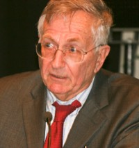

Corruption & power
Bribery, kleptocracy, abuse of office and the powerful.
12 films · 13 sessions · 77 people
Often together with: Documentary craftLegal & safety for reportersWhistleblowers & leaksRussia & Eastern EuropeReligionMoney, banks & business
Films
 The Oligarch and the Art DealerAndreas Dalsgaard2026 · 120 min
The Oligarch and the Art DealerAndreas Dalsgaard2026 · 120 min Cover-UpLaura Poitras, Mark Obenhaus2025 · 117 min
Cover-UpLaura Poitras, Mark Obenhaus2025 · 117 min The Black SwanMads Brügger2025 · 90 min
The Black SwanMads Brügger2025 · 90 min The Slow HustleSonja Sohn2021, 2023 · 90 min
The Slow HustleSonja Sohn2021, 2023 · 90 min The Killing of a JournalistMatt Sarnecki2022 · 100 min
The Killing of a JournalistMatt Sarnecki2022 · 100 min- CollectiveAlexander Nanau2020 · 109 min
 Citizen KAlex Gibney2019 · 128 min
Citizen KAlex Gibney2019 · 128 min Dark SunsJulien Elie2019 · 154 min
Dark SunsJulien Elie2019 · 154 min Ghost FleetShannon Service, Jeffrey Waldron2018 · 88 min
Ghost FleetShannon Service, Jeffrey Waldron2018 · 88 min The Panama PapersAlex Winter2018 · 100 min
The Panama PapersAlex Winter2018 · 100 min WatergateCharles Ferguson2018 · 130 min
WatergateCharles Ferguson2018 · 130 min SpotlightTom McCarthy2015 · 127 min
SpotlightTom McCarthy2015 · 127 min
Sessions
- 2026 · Fri Nov 6 · 2:45pmPanelDX Academy Masterclass: The Making of The Oligarch and the Art Dealer and Rescue, with Andreas DalsgaardAndreas Dalsgaard, Sig Libowitz
- 2025 · Fri Oct 31 · 3:20pmPanel · DX²Subterfuge in Search of TruthMads Brügger, Ted Hope
- 2025 · Fri Oct 31 · 3:20 PMConversationSubterfuge in Search of Truth: Mads Brügger in Conversation with Ted HopeMads Brügger, Ted Hope
- 2024 · Sat Nov 9 · 12:45 PMWorkshopWorkshop: Working Responsibly with WhistleblowersMargaux Ewen, Mary Inman, Peter Klein, Jennifer Nelson
- 2022 · Thu Oct 13 · 10:00 AMConversation · DX²Opening Conversation: The Making of NavalnyDaniel Roher, David Filipov, Maria Pevchikh
- 2022 · Thu Oct 13 · 2:00 PMPanel · DX²Whistleblowers and the Creator EconomyEd Pierson, Amber Scorah, Mary Inman, Leen Karadsheh
- 2021 · Wed Oct 13 · 10:00amPanelSame Story, Different ApproachKatie Benner, Dan Chen, Erica Green, Amanda Pike, Jesse Einstein
- 2021 · Sat Oct 13 · 9:30amPanel · DX²The Pandora Papers: Collaborating for Global and National ImpactScilla Alecci, Mary Inman, Seung-ho Choi, Axel Gordh Humlesjö, Minna Knus-Galán, Susanne Reber
- 2019 · Thu Oct 10 · 4:00 PMPanel · DX²The UndertowRamona Diaz, Courtney Radsch, Andalusia Knoll Soloff, Nanfu Wang, Brenda Coughlin
- 2018 · Thu Oct 11 · 11:00 AMPanelPivot: The Unexpected MomentMarcia Davis, Paco De Onís, Bridget Hunnicutt, Patrick Radden Keefe, Gordon Witkin, Pamela Yates
- 2017 · Fri Oct 20 · 4:30 PMConversationAnatomy of a Serial: Closing Conversation with Ryan White and Jean Wehner, The KeepersRyan White, Jean Wehner, Gilbert Cruz
- 2017 · Thu Oct 19 · 2:45 PMPanelRapid Response in the Age of TrumpHeather Courtney, Thomas Jennings, Sheila Leddy, Eric Rich, Raney Aronson-Rath
- 2015 · Fri Oct 2 · 1:30 PMConversationAlex Gibney, in Conversation with Franklin FoerFranklin Foer, Alex Gibney
People most involved
 Mads BrüggerPanelist, filmmaker · 2025
Mads BrüggerPanelist, filmmaker · 2025
- Richard Ben-VenistePanelist, film subject · 2018
- Shannon ServicePanelist, filmmaker · 2018
- Alex WinterFilmmaker, panelist · 2 editions, 2015–2018
- Alex GibneyFilmmaker, panelist · 3 editions, 2015–2019
 Laura PoitrasFilmmaker, panelist · 2 editions, 2025–2026
Laura PoitrasFilmmaker, panelist · 2 editions, 2025–2026 Mark ObenhausFilmmaker, panelist · 2025
Mark ObenhausFilmmaker, panelist · 2025
Seymour HershFilm subject, panelist · 2025 Andreas DalsgaardFilmmaker, panelist · 2026
Andreas DalsgaardFilmmaker, panelist · 2026
- Tom McCarthyFilmmaker · 2015
- David SimonModerator · 2015
- Martin BaronPanelist · 2015
 Michael RezendesPanelist, moderator, workshop leader · 3 editions, 2015–2023
Michael RezendesPanelist, moderator, workshop leader · 3 editions, 2015–2023- Sacha PfeifferPanelist · 2015
- George FramptonPanelist · 2018
- Bob WoodwardFilm subject · 2018
- Carl BernsteinFilm subject · 2018
- John DeanFilm subject · 2018
- Jill Wine-BanksFilm subject · 2018
- Jeffrey WaldronFilmmaker · 2018
- Jon BowermasterFilmmaker · 2018
- Patima TungpuchayakulFilm subject · 2018
- Julien ElieFilmmaker · 2019


- Amira SmajicFilm subject · 2025

 Ronnie GreeneModerator · 2 editions, 2024–2025
Ronnie GreeneModerator · 2 editions, 2024–2025- Alexander NanauFilmmaker · 2020
 Sonja SohnFilmmaker · 2021
Sonja SohnFilmmaker · 2021 Nicki MayoModerator, panelist · 2 editions, 2023–2024
Nicki MayoModerator, panelist · 2 editions, 2023–2024